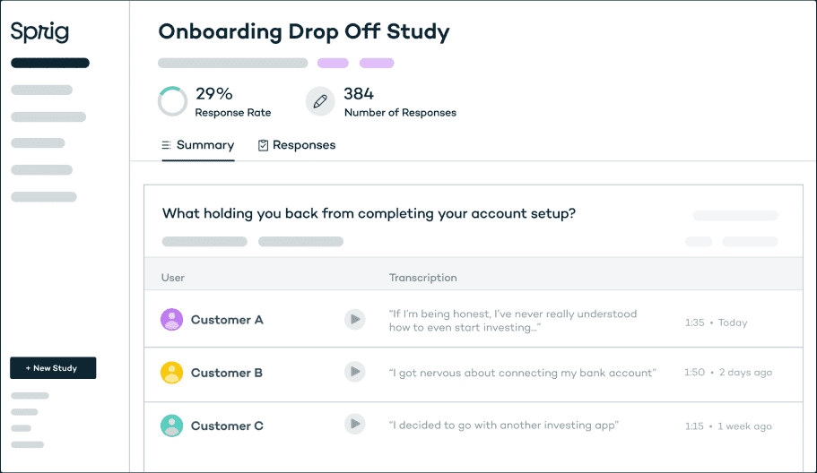

In-context user research that's fast and reliable.
Ensure user research happens early and often with Sprig's targeted microsurveys, video questions, and more.
Trusted by the world's most innovative companies
Modern product teams move fast, but learning from customers takes a ton of time, effort, and energy.
So teams often rush user research or skip it altogether, causing products and features to miss the mark.
Sprig makes it possible to obtain qualitative insights at the speed and scale of analytics
Target your actual users during key moments throughout their product journey.
Get 30% higher response rates by asking your customers hyper-relevant questions based on who they are and what they'll do within your product.
SOLUTIONS
How Sprig helps ensure every product decision is customer-informed
And helps through every stage of your product.
Contextual Microsurveys
Keep a constant pulse on your customer’s experience. Continuously surface user insights via in-product, email, or link microsurveys to improve your product and acquisition funnels.

Video Questions
Have more customer conversations, in less time. Conduct one-to-one user interviews anytime, anywhere in order to validate ideas and build a roadmap your customers will love.
Concept Testing
Quickly iterate designs based on feedback from your users. Conduct rapid and remote concept testing to ensure your new concept, design, and messaging hit the mark by collecting feedback from your customers before launch.
case study
Trusted by the world's most customer-centric teams
Sprig helps product and research teams ensure user insights fuel every product decision.
Sprig helps us collect insights easier, faster, and more accurately than any other tool on the market, which allows us to build a better product for our users and ultimately grow our revenue.
Daniel Layfield
Growth Product Manager at Codecademy